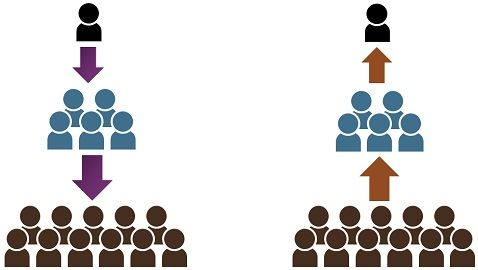

When communication takes place, the message flows from one person to other. Communication can be classified as per its flow in the following manner:
Communication from a person with senior authority to a person with junior autority such as instructions, tasks orders,etc.
When a manager askes an employee to restock the shelves.
This type of communication can be categorised as the opposite of downward communication such as requests, proposals, feedback, etc.
An employee drafting a proposal for a raise.
This types of communication takes place between members of group when all of them are peers or at the same level.
The managers of different departments talking about their employees.
This type of communication can flow in any and all directions.
When a student asks the teacher a question and vise versa.
This type of communication is informal communication and can also flow in all directions. If not used correctly, it can become the source of rumours as it is an unreliable source (unreliable as not one takes responsibility for it) but if used correctly, it can influence public opinion.